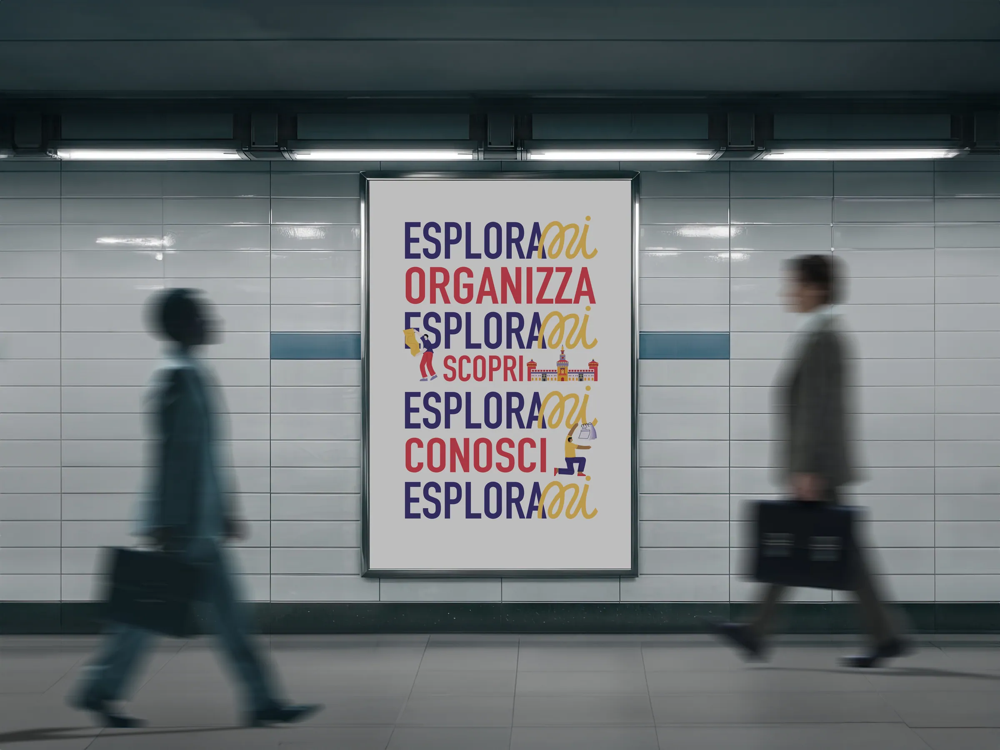
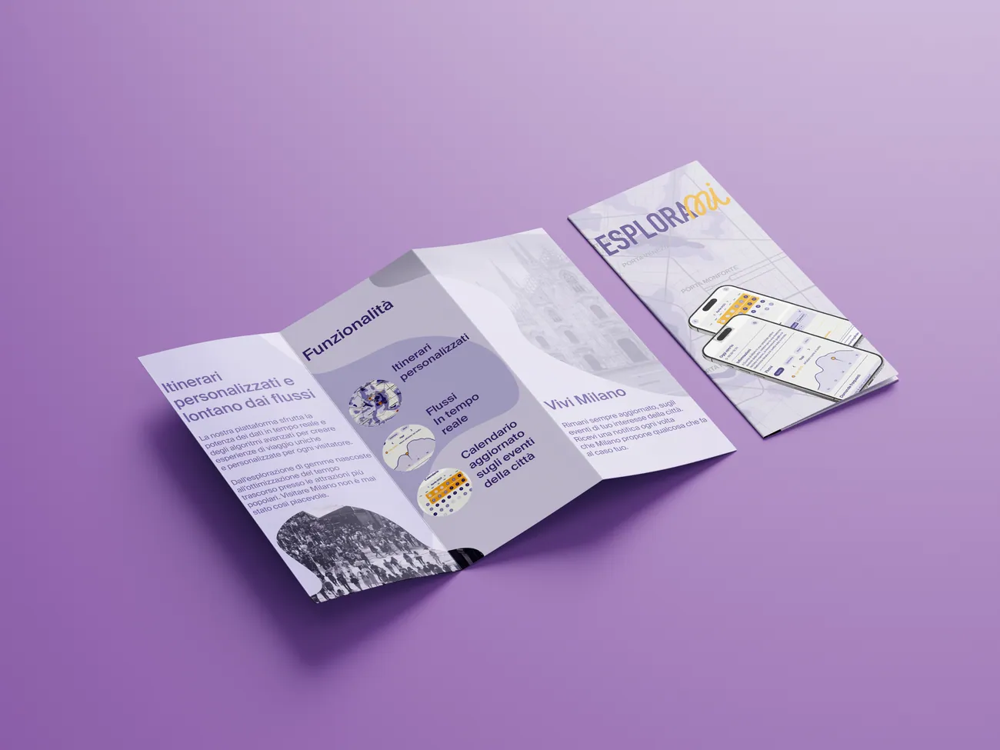
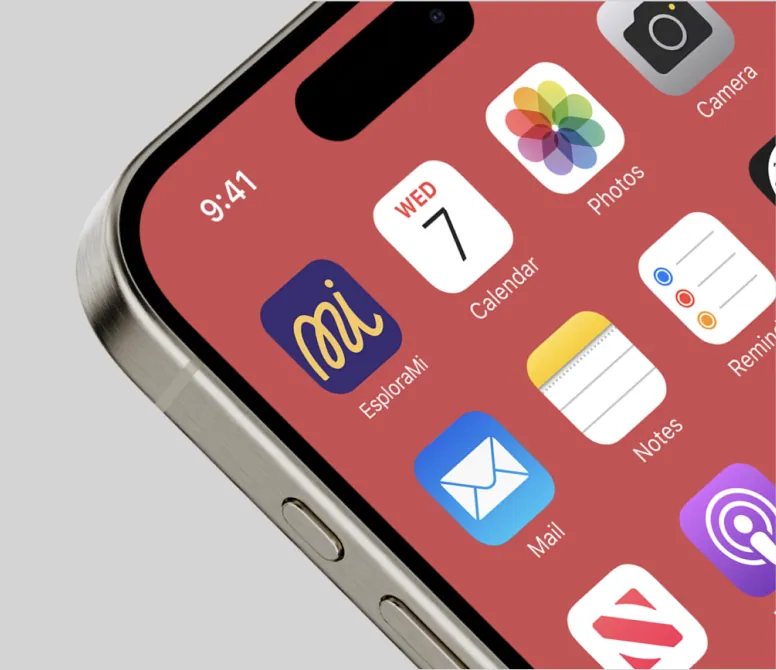
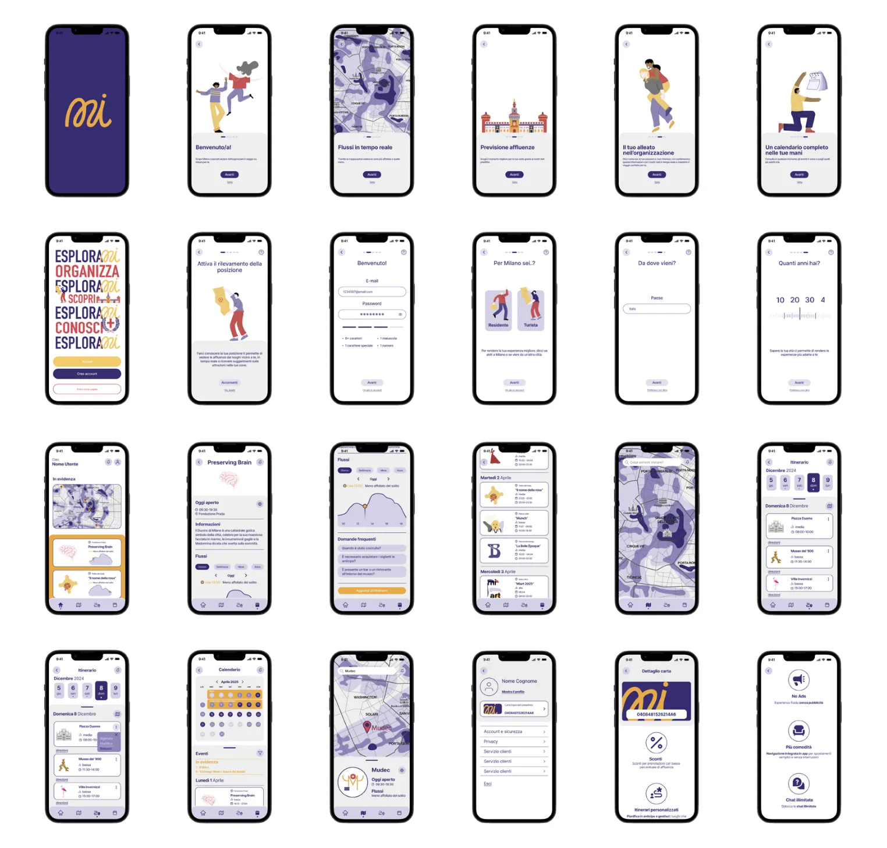

EsploraMi
EsploraMi affronta il problema dell’overtourism e del disorientamento che molti viaggiatori provano di fronte a itinerari standardizzati. Il servizio accompagna l’utente a 360 gradi, dalla pianificazione fino al post-viaggio.
EsploraMi tackles overtourism and the disorientation many travelers feel when faced with standardized itineraries. The service supports users end to end, from planning to the post-trip.
Tutto inizia con un’accurata profilazione dei gusti del turista, che permette al sistema di generare un calendario interattivo e una mappa con proposte su misura.
It all starts with a careful profiling of the traveler’s tastes, which lets the system generate an interactive calendar and a map of tailored suggestions.
L’innovazione chiave è l’ottimizzazione temporale: integrando dati sui flussi urbani (grazie allo studio con IGPDecaux), EsploraMi suggerisce gli orari migliori per evitare la congestione. Il risultato è un’esperienza più autentica per il viaggiatore e un turismo più sostenibile per la città.
Its key innovation is time optimization: by integrating urban flow data (thanks to the study with IGPDecaux), EsploraMi suggests the best times to avoid crowds. The result is a more authentic experience for travelers and more sustainable tourism for the city.



EsploraMi
Service designService design
2025
Politecnico di MilanoPolitecnico di Milano
- Frigeni Lara
- Guerra Matteo
- Marrone Lorenzo
- Villa Eleonora
- CodingCoding
- User interfaceUser interface
- UXUX